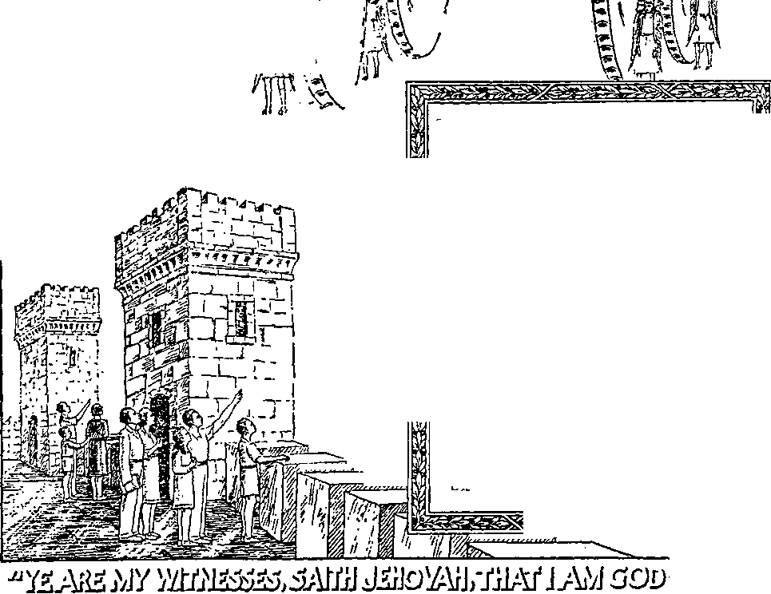

S'"'1®?*
Announcing
Z12 ULU ULI IUJLII3 $r#*j
— • -J
Vol. LXIX
Semimonthly
FEBRUARY 1, 1948
QW.TB.S-T5. I
The Slaying of the Lamb ...........
“Between the Two Evenings” ... Introducing the Remembrancer
Doing It in Remembrance Determining the Time_______
Theocratic Method .............
Meaning of Emblems ______
No. 3
KJ
36
37
38
40
41
42
43
Jehovah's Kingdom O'S
CONTENTS
Memorial of Founding the New World 35
When and How to Celebrate Memorial 39
Tzy/M'/M
Divine Prohibition op Demonism
Jehoahaz, Possessed by a Foreigner .... 47
Showing Forth Jehovah’s Praises
7//&f/WW7ff/0A
Published Semimonthly By
WATCH TOWER BIBLE & TRACT SOCIETY 117 Adams Street • - Brooklyn 1, N.Y., U.SA.
Officers
N. H. Knoeb, President Grant Suiter, Secretary
“And all thy children shall be taught of Jehovah; and great shall be the peace of thy children.” - Isaiah 34:13.
THE BIBLE CLEARLY TEACHES
THAT JEHOVAH Is the only true God, from everlasting to everlasting, and is the Maker of heaven and earth and Giver of life to his creatures; that the Word or Logos was the beginning of his creation and his active agent in creating all other things; and that the creature Lucifer rebelled against Jehovah and raised the issue of His universal sovereignty;
THAT GOD created the earth for man, made perfect man for the earth and placed him upon it; that man yielded to unfaithful Lucifer, or Satan, and willfully disobeyed God’s law and was sentenced to death; that by reason of Adam’s wrong act all men are born sinners and without the right to life;
THAT THE LOGOS was made human as the man Jesus and suffered death in order to produce the ransom or redemptive price for obedient men; that God raised up Christ Jesus divine and exalted him to heaven above every other creature and clothed him with all power and authority as head of God's new capital organization;
THAT GOD’S CAPITAL ORGANIZATION is a Theocracy called Zion, and that Christ Jesus is the Chief Officer thereof and is the rightful King of the new world; that the faithful anointed followers of Christ Jesus are Zion’s children, members of Jehovah’s organization, and are His witnesses whose duty and privilege It Is to testify to Jehovah’s supremacy and declare his purposes toward mankind as expressed in the Bible;
THAT THE OLD WORLD, or Satan’s uninterrupted rule, ended A.D. 1914, and Christ Jesus has been placed by Jehovah upon the throne, has ousted Satan from heaven, and now proceeds to vindicate His name and establish the “new earth”;
THAT THE RELIEF and blessings of the peoples can come only by Jehovah’s kingdom under Christ, which has begun; that His next great act is to destroy Satan’s organization and establish righteousness completely 111 the earth ; and that under the Kingdom the people of good-will surviving Armageddon will carry out the divine mandate to “fill the earth” w ith righteous offspring, and that the human dead in the graves will be raised to opportunities of life on earth.
“SONG OF PRAISE” TESTIMONY PERIOD
The 1948 Service Calendar designates February as “Song of Praise” Testimony Period. Psalm 18: 49, upon which the designation rests, sets as the motif for this period the singing of praises to God’s name among the nations. This we will do by intensifying our efforts in the second month of the 1948 Watchtower campaign for getting subscriptions for this magazine. All house-to-house workers will present the special offer of a year’s subscription together with a premium of eight booklets published by the Watch Tower Society, all at the regular subscription rate of just $1.00, American money. The peak of the northern winter has never halted the forward push of these annual campaigns, and publishers of God’s praises are determined it will not this year either. Come along with us, all you readers of The Watchtower. Your co-operation is appreciated, your service is valued, your joy will be enhanced by singing praises to the Most High. We are always ready to supply information and references for you to work with organized, trained campaigners. Take part and be able to hand in your report at the month’s end on what you have accomplished in this “song of praise”.
1948 MEMORIAL DATE
The date for celebrating the annual Memorial of Christ’s death in which his faithful body members participate is Nisan 14, that is to say, the 14th day of the first Jewish lunar month, as instituted by Jehovah God. (Exodus 12:1-8) The Watch Tower Society calculates this according to the first new moon that falls nearest
ITS MISSION
THIS journal Is published for the purpose of enabling the people to know Jehovah God and his purposes as expressed in the Bible. It publishes Bible instruction specifically designed to aid Jehovah’s witnesses and all people of good-wilL It arranges systematic Bible study for its readers and the Society supplies other literature to aid In such studies. It publishes suitable material for radio broadcasting and for other means of public instruction in the Scriptures.
It adheres strictly to the Bible as authority for its utterances. It is entirely free and separate from all religion, parties, sects or other worldly organizations. It is wholly and without reservation for the kingdom of Jehovah God under Christ his beloved King. It is not dogmatic, but invites careful and critical examination of its contents in the light of the Scriptures. It does not indulge in controversy, and its columns are not open to personalities.
notice to Subscribers: Remittances should be sent to office in your country In compliance with regulations to guarantee safe delivery of money. Remittances are accepted at Brooklyn from countries where no office Is located, by international money order only. Subscription rates In different countries are stated below in local currency. Notice of expiration (with renewal blank) is sent at least two issues before subscription expires. Change of address when sent to our office may be expected effective within one month. Send your old as well as new address
Please address the Watch Tower Society in every case.
Offices Yearly Subscription Rate
America (17. S.), 11T Adams St., Brooklyn 1, N.Y.
Australia, 7 Beresford Rd., Strathfield, N. S. W.
England, 34 Craven Terrace, London, W. 2
India, 167 Love Lane, Bombay 27 Bs 3/8
Jamaica, 151 King St., Kingston
A’ew Zealand, G. P. O. Box 30, Wellington, C. 1
Translations of this journal appear in many languages.
ALL SINCERE STUDENTS OF THE BIBLE who by reason of Infirmity, poverty or adversity are unable to pay the subscription price mar have The Watchtower free upon written application to the publishers made once each year, stating the reason for so i equesting it. We are glad to thus aid the needy, but the written application once each year is required by the postal regulations.
Printed In the United States of America
Entered as second-class matter at the post office at Brooklyn, N. 7., under the Act of March 3, 1879.
to the spring equinox, whether before it or after it. We do not follow strictly the fixed Jewish schedule of 7 intercalap’ month.-, for every 19-year period. According to due reckoning, then. Nisan 14 begins at sundown of Thursday, March 25, 1948. All organized companies and groups of Jehovah’s Christian witnesses throughout the earth should assemble that day after 6 p.m. Standard Time and observe the Memorial, providing the unleavened bread and red wine for any persons attending that profess to be of the remnant of the members of Christ’s body.
“WATCHTOWER” STUDIES
Week of March 7: “Memorial of Founding the New World,” fl 1-20 inclusive, The Watchtower February 1, 1948.
Week of March 14: “When and How to Celebrate Memorial,” fl 1-23 inclusive, The Watchtower February 1, 1948.
DISTRICT ASSEMBLY IN ATLANTA
As announced at the Los Angeles assembly last August, the first of the 1948 district assemblies in America will be held in Atlanta, Georgia. The time of this 3-day assembly has been moved up to March 12-14. The contract for the use of the Municipal Auditorium, 30 Courtland Street, Atlanta, Georgia, has now been signed, making possible this definite announcement. Address necessary correspondence to Watchtower Convention Committee, 203 Spring Street N.W., Atlanta 3, Georgia. The president of the Society and other representatives are expected to serve on the program. All persons of good-will included within the boundaries of this district are cordially invited to attend.
Vol. LXIX February 1, 1948 No. 3
“And all that dwell upon the earth shall worship him, whose names are not written in the book of life of the Lamb slain from the foundation of the world."—Rev. 13:8.
JEHOVAH God laid the foundation for a new world of enduring peace and righteousness nineteen centuries ago. Hence none of the political rulers and religious clergymen of Christendom today can possibly lay the foundations of a “better world of tomorrow”, as they call it. The lives of the millions of persons that were slaughtered in the two world wars since A.D. 1914 provide no true foundation for a “new and finer world” of enduring peace. They cannot compare or compete ■with the “sure foundation” that Jehovah God laid almost two thousand years ago. That sure foundation was laid through the death of his Son, the Messiah.
2 John, the son of the Jewish priest Zacharias, pointed to Jesus of Nazareth as the Messiah and spoke of him as “the Lamb of God, which taketh away the sin of the world”. (John 1:29) Hundreds of years before John, the prophet Isaiah had compared the coming Messiah to a lamb. His very likeness to a lamb signified that he would be slaughtered and put to death violently. Isaiah prophesied: “He was oppressed, and he was afflicted, yet he opened not his mouth: he is brought as a lamb to the slaughter, and as a sheep before her shearers is dumb, so he openeth not his mouth. He was taken from prison and from judgment: . . . He was cut off out of the land of the living: for the transgression of my people was he stricken. And he made his grave with the wicked, and 'with the rich in his death; because [like a lamb or sheep] he had done no violence, neither was any deceit in his mouth. . . . thou shalt make his soul an offering for sin.” (Isa. 53: 7-10) Because the soul of this innocent one was poured out in death for the good of all mankind, the foundation of a righteous new world was laid in him.
8 For such reason the Apocalypse, or Revelation, when foretelling the political arrangements of today for world domination, speaks of Messiah as “the Lamb slain from the foundation of the world”. (Rev. 13: 8) Persons on earth who fail to worship him in this time of judgment upon the nations have nothing in the Bible to indicate that they will live clear through the “great tribulation” in which this world will end. Rather, their consignment to destruction is foretold. On the opposite side of the matter, those who do worship him as the slain Lamb of God whose death provided a sin-offering are the only ones entitled to any hope of surviving the great tribulation and of passing alive into the new world of righteousness.
4 Before ever the Lamb, Jesus of Nazareth, was cruelly slain upon our earth Jehovah God the Great Shepherd foretold that he would have a company or body of faithful followers who would be conformed to his image. There is a small remnant of such faithful body-members on earth now. Hence the words of the apostle written at Ephesians 1: 3,4 apply to this remnant of today, namely: “Blessed be the God and Father of our Lord Jesus Christ, who hath blessed us ■with all spiritual blessings in heavenly places in Christ: according as he hath chosen us in him before the foundation of the world [at Christ’s death], that we should be holy and -without blame before him in love.” Moreover, today, and particularly from and after A.D. 1918 there is a multitude of persons who are sheeplike and who do good to that faithful remnant; and when the great tribulation is over, the Lamb of God in his Kingdom glory will say to this earthly class of sheep: “Come, ye blessed of my Father, inherit the kingdom prepared for you from the foundation of the world.” (Matt. 25:34) The Kingdom’s blessings were prepared for them from the world’s foundation because the Lamb of God died not only for “his body, which is the church”, but also for all others of mankind that should believe on his sacrifice as a sin-offering and devote themselves to God through him. In harmony with this John wrote to the church which is the body of Christ: “If any man sin, we have an advocate with the Father, Jesus Christ the righteous: and he is the propitiation for our sins: and not for ours only, but also for the sins of the whole world.”—1 John 2:1, 2.
1. Why cannot men of today found a new world of lasting peace? 4. (a) When did God choose the church in Christ45 (b) When were the 2, 3. To what was Messiah likened, and by whom? and why? Kingdom’s blessings prepared for the “other sheep” of today?
THE SLAYING OF THE LAMB
’ The slaying of the Lamb was the time when the foundation of the righteous new world was laid. This was not just at the time that Jesus of Nazareth presented himself to John the Baptist, about October 1 of the year 29, and was baptized in water. True, his baptism was to symbolize his dying to himself as a man in order that he might thenceforth live to God in fulfillment of all the prophecies that were written beforehand. At that time was when there took place what the apostle Paul describes at Hebrews 10:4-7, saying: "It is not possible that the blood of bulls and of goats should take away sins. Wherefore when he cometh into the world, he saith, Sacrifice and offering thou wouldest not [of bulls, goats and lambs], but a body hast thou prepared me: in burnt offerings and sacrifices for sin thou hast had no pleasure. Then said I, Lo, I come {in the volume of the boolc it is written of me,) to do thy will, 0 God." From then on Jesus began to be baptized into death. But this baptizing into death was not finished at his water baptism in Jordan river, as is shown by his words to his disciples James and John just a few months before he was lulled: 'With the baptism that I am baptized withal shall ye be baptized.” (Mark 10: 39) A little earlier that same year he said to all his disciples: “I have a baptism to be baptized with; and how am I straitened till it be accomplished.” (Luke 12: 50) This baptism into death was not all accomplished, and hence his being slain as a Lamb was not all completed, until he was brought to the slaughterers at Calvary and died on the torture stake Friday, April 3, of the year 33.
6 At that time, then, the foundation of the new world of God's promise was laid. Therefore Christ Jesus can be spoken of as “the Lamb slain from the foundation of the world”. He had to die in order that all those gaining life in the new world might receive cleansing from sin in his blood and be forgiven their transgressions against God. However, Jesus must be a living foundation for the everlasting new world. For this reason Almighty God resurrected him from the dead to immortal life in heaven. He thus became a “living stone”, and, as such, he could ascend up to heaven into the presence of God his Father and could be laid as the “sure foundation” of the heavenly organization called “Zion”. In order for the church to be-built upon him, it is the privilege of the members of his body to come to him: “To whom coming, as unto a living stone, disallowed indeed of men, but chosen of God, and precious, ye also, as lively stones, are built up a spiritual house, an holy priesthood, to offer up spiritual sacrifices, acceptable to God by Jesus Christ. Wherefore also it is contained in the
5 When was Jesus the Lamb slain from the world's foundation? 6, 7. Why must he be a living foundation, and for whom? scripture, Behold, I lay in Sion a chief corner stone, elect, precious: and he that believeth on him shall not be confounded.” (1 Pet. 2:4-6) Peter wrote thus to the church, built on Christ Jesus the sure foundation.
7 But to the Jewish rulers and elders in the courtroom Peter said a short time after the resurrection and ascension of Jesus Christ: “This is the stone which was set at nought of you builders, which is become the head of the corner. Neither is there salvation in any other: for there is none other name under heaven given among men, whereby we must be saved.” (Acts 4:8-12) True to Bible prophecy, the religious rulers and political elders of Christendom today follow the course of those Jews. They set at nought the true foundation of God’s new world and lay a blood-stained, man-made foundation for their own “new and better world of tomorrow”.
8 By God’s providence, the One rightly spoken of as the “Lamb slain from the foundation of the world” was slain in the flesh on the very same day that the Israelites slew their passover lamb and ate it together with unleavened bread A.D. 33. The “Lamb of God” had to die that same day of the passover sacrifice in order that he might act the part of the true passover Lamb whose blood has value enough to cancel the sin of all those of mankind who believe and accept him as their sin-offering. After the Jewish passover the feast of unleavened bread followed for a week, or seven days, from the fifteenth day to the twenty-first day of their first month. In view of the foregoing facts the apostle Paul wrote: “Purge out therefore the old leaven, that ye may be a new lump, as ye are unleavened. For even Christ our passover is sacrificed for us: therefore let us keep the feast, not with old leaven, neither with the leaven of malice and wickedness; but with the unleavened bread of sincerity and truth.” (1 Cor. 5:7,8) The very fact that Paul would call him “Christ our passover” required that Christ Jesus should be sacrificed on the identical day upon which the Jews slew and ate their passover lamb, namely, the fourteenth day of Nisan. By God’s arrangement Nisan was the first month of their year. It is important to understand and recognize that fact in order to know each year the proper time to celebrate the memorial of the founding of the new world of righteousness by the death of the Lamb of God.
’ The first passover was held by the Israelites under Moses down in the land of Egypt in the sixteenth century before our common era. The firstborn offspring of all mankind and of beasts in Egypt were about to be killed by Jehovah’s angel of death so as to break Pharaoh’s proud resistance to Jehovah’s demand that the Israelites be let go free out of Egypt. In order to have their own firstborn children
8. On what day was he slain as a Lamb, and why on that day’ 9. Where was the first passover victim slain, and when? and domestic animals passed over and spared and in order to prove their worthiness to be freed from Egypt by obedience to Jehovah God, the Israelites were commanded to sacrifice and eat the passover victim on the fourteenth day of the month Abib or Nisan. We read: “And Jehovah spake unto Moses and Aaron in the land of Egypt, saying, This month shall be unto you the beginning of months: it shall be the first month of the year to you. Speak ye unto all the congregation of Israel, saying, In the tenth day of this month they shall take to them every man a lamb, according to their fathers’ houses, a lamb for a household: . . . and ye shall keep it until the fourteenth day of the same month; and the whole assembly of the congregation of Israel shall kill it at even [marginal reading: between the two evenings]. And they shall take of the blood, and put it on the two side-posts and on the lintel, upon the houses wherein they shall eat it. And they shall eat the flesh in that night, roast with fire, and unleavened bre^d; with bitter herbs they shall eat it.”—Ex. 12:1-8, Am. Stan. Ver.
“BETWEEN THE TWO EVENINGS”
10 In the Hebrew language in which Jehovah’s command was given through Moses the expression translated at even literally means between the two evenings. This has occasioned a controversy as to just when the passover lamb was killed. Also, when did Christ Jesus celebrate his last passover supper with his twelve disciples, immediately after which he introduced a new memorial pertaining to a new world ruled by God’s kingdom? There are scholars that argue that the two evenings between which the passover lamb must be slain extended from twelve o’clock noon to 6 p.m. or sundown, so that midway between these two evenings would be at 3 p.m. They also point impressively to Jesus’ death at that hour of the afternoon. The Jewish day of 24 hours begins at sundown. (Lev. 23:32) So their argument leads to the conclusion that the passover victim was slain at mid-afternoon of Nisan 14, before sundown, and was eaten the night of Nisan 15. They cite Numbers 33:2, 3 to their support. The noted French rabbi Solomon Isaaki, popularly known as “Rashi”, of the eleventh century, declared in his commentary on Exodus 12:6: “It appears to me that the phrase between the two evenings denotes the hours between the evenihg-of the day and the evening of the night. The evening of the day is from the beginning of the seventh hour [or, immediately after noontide], when the evening shadows begin to lengthen, while the evening of the night is at the beginning of the night.” David Kimchi’s Lexicon explains that “there are two evenings, for from the time that the sun begins to decline [after twelve noon] is one evening, and the other evening is after the sun has gone down, and it is the space between which is meant by between the two evenings.” That is the traditional Jewish view.
11 However, there are other scholars of prominence who take the expression differently, among them being the celebrated Spanish rabbi, Aben-Ezra (10921167), called by the Jews the Sage, the Great. Among his noted works is his Commentary on the Pentateuch; and says he: "Behold we have two evenings, the first is when the sun sets, and that is at the time when it disappears beneath the horizon; while the second is at the time when the light disappears which is reflected in the clouds, and there is between them an interval of about one hour and twenty minutes.” {Commentary, on Exodus 12:6) This Aben-Ezra, not to mention the Samaritans and the anti-Talmud Karaites, is followed in this view by such scholars as Michaelis, Rosenmueller, Gesenius, Maurer, Ka-lisch, Knobel, Keil, and most commentators of the nineteenth century. All of these take between the two evenings to denote the space of time between the setting of the sun and the moment when the stars become visible, or when darkness sets in, which would be between six and seven p.m.1
12 This would mean that, originally in Egypt, the Israelites killed the passover between the two evenings by killing the victim after sundown and before nightfall on Nisan 14. They at once prepared it and ate it that same night before midnight.—Num. 28:16.
10. What is the traditional view of between the two evenings f
11. 12 When would the other view show the lamb was first slain?
13 The Watchtower began publication in the nineteenth century, and from the beginning it has stuck to this latter understanding of the matter. For example, in its “Question Column” of its issue of February, 1886, it said: “It was on the afternoon of the fourteenth of Nisan (corresponding this year to Monday afternoon, April 19th) that Jesus died. According to the law the Passover lamb must be killed on the fourteenth of Nisan, . . . When the Lord and the apostles celebrated the Passover Supper for the last time together, they partook of it early on the fourteenth—‘the same night in which he was betrayed.’ After the typical supper the Remembrancer, or Lord’s supper, was instituted, and then they went out—to Gethsemane, to Caiaphas, to Herod and Pilate, and to Calvary; where Jesus was crucified on the afternoon of the same day, and buried the same afternoon, because the great [seven-day] Feast of Passover began the day following, commencing at 6 p.m. of the same day in which Jesus died. (John 19:32,33) It was not the [seven-day] Passover Feast then, but the supper, that Jesus observed, and after which he instituted as instead of it a memorial of his death in the bread and wine.”—Paragraphs 4-6.
11 Under “Anniversary of our Lord’s Death” in the Watchtower issue of March, 1889, we read: “The Hebrews reckoned their day differently from what we do. With them it began at sunset or at 6 o’clock P.M. Thus it was that our Lord and the apostles could eat the Last Supper probably about 8 o’clock, then go to the Garden of Gethsemane, to Pilate and Herod and be crucified the same day in the afternoon. Probably it was in view of the fact that both the symbolic supper in commemoration of our Lord’s death, and the death itself, might be upon one and the same day, that the Hebrews had the custom mentioned, of reckoning the 24-hour day as beginning with the night.”—Paragraph 4.
INTRODUCING THE REMEMBRANCER
15 Readers, bear in mind, during all this discussion, that what we are trying to establish for the benefit of our new ones is the proper time for celebrating what Paul calls "the Lord’s supper”. (1 Cor. 11: 20) That it was no ordinary meal with leavened bread, nor any feast prepared by a friendly entertainer, that Jesus and his twelve disciples ate, is clear from the records of Matthew, Mark and Luke. No leavened bread could be eaten with the passover supper on Nisan 14. Hence, together with the seven-day feast of unleavened bread that began next day after passover supper, there were eight days of unleavened bread in succession, all together. (Lev. 23:5,6) At Mark 14:12-14 we read: “And the first day of unleavened bread, when they killed the passover, his disciples said unto him, Where wit thou that we go and prepare that thou mayest eat the passover? . . . The Master saith, Where is the guestchamber, where I shall eat the passover with my disciples?” (Also Matthew 26:17,18; Luke 22:7-11) Seated with liis disciples in the upper room in Jerusalem the night of Nisan 14, A.D. 33, Jesus said to them: “With desire I have desired to eat this passover with you before I suffer: for I say unto you, I will not eat it, until it be fulfilled in the kingdom of God.”—Luke 22:15,16, Am. Stan. Ver.
13 Jesus thus definitely identified the meal as the memorial of that first passover of the Israelites in Egypt. Jesus’ words thus bar out the argument of some that Jesus celebrated the passover a day in advance of the legal date. In that case Jesus or one of his disciples would have had to go to the temple in Jerusalem to kill the passover lamb in the presence of the priests and then have a priest dash its blood at the base of the altar and offer up its fat upon the altar. The Jewish priests had definite rules regarding the sacrifice of the passover. So we may not imagine that the temple priests would have carried out the essential acts of sprinkling the lamb’s blood and burning its fat together with incense that same evening on any other day than the legal one.* It is evident, then, that Jesus celebrated the paschal supper legally, on the anniversary date of its first observance down in Egypt under Moses.
17 According to the apostle John, it was at this passover supper that Jesus washed his disciples’ feet for an example of humility and of loving service to them. John reports: “Now Jesus knowing before the feast of the passover, that his hour was come, that he should depart out of this world to the Father, having loved those his own who were in the world, he loved them to the end. And as supper was preparing, the enemy having already put into the heart of Judas Iscariot, son of Simon, that he should betray him.” (John 13:1,2, The Emphatic Diaglott) Thus Jesus prepared himself to wash his disciples’ feet while the passover was preparing, or, "during supper,” as the American Standard Version translated the expression. So, John’s expression “before the feast of the passover” does not mean that this took place at a meal on the day before the passover day, on Nisan 13, as some argue. It does mean that immediately before the passover meal began Jesus
* See page 501 of the Lexicon by the Hebrew scholar J. H. Otho, in which he quotes Maimonides. Published in Basle, Switzerland, in 1675.
17. Why does not John 13:1, 2 show it was a meal before passover? knew that the hour of his own personal sacrifice as the “Lamb of God” was at hand. This was why he seized the final opportunity to wash his disciples’ feet and give them some instruction on humility. So this was Thursday night, April 2, A.D. 33, according to our calendar, but Nisan 14 according to the Jewish lunar calendar. It was passover night. Because three writers, Matthew, Mark and Luke, had already written in detail about Jesus’ last passover and his introducing of the new memorial, John omits ordinary details about the passover and the memorial and gives us other details not set forth by the other three writers.
18 While they were eating the lamb, Jesus pointed out who would be his betrayer, by dipping a sop into the sauce of bitter herbs and handing it to Judas Iscariot. “And after the sop Satan entered into him. Then said Jesus unto him, That thou doest, do quickly. Now no man at the table knew for what intent he spake this unto him. For some of them thought, because Judas had the bag, that Jesus had said unto him, Buy those things that we have need of against the feast; or, that he should give something to the poor.” (John 13: 27-29) Not that Jesus and his disciples needed anything further for the feast then in progress, but that the feast of unleavened bread that was to follow for the next seven days required something, and hence the disciples thought Judas was sent out to buy something for that feast which was celebrated beginning Nisan 15.
18 It was only down in Egypt itself, fifteen centuries before this, that the Israelites were forbidden to leave their houses before morning because Jehovah’s destroying angel was abroad in the land. Hence Jesus was not breaking the law, not even one jot or tittle of it, when he sent Judas out into the night, nor even when he and his eleven faithful disciples went out some time later. (Ex. 12: 22) Mark the fact,
18 Why does not John 13:29 show it was in advance of passover? 19. What here shows the tune of day for Memorial to be held? therefore, that Judas was not present when Jesus set up a memorial of a new thing on passover night.* “He then having received the sop went immediately out: and it was night.” (John 13:30) This fixes it that Memorial is something to be celebrated only at night, after sundown and before midnight, and not in the morning or any other hour of the daylight.
80 That the remembrancer of Christ’s death was set up right after the disciples had finished partaking of the passover lamb and had thus fulfilled the law of Moses by which they were bound, the several accounts show. Mark reports: “And as they did eat, Jesus took bread, and blessed, and brake it, and gave to them, and said, Take, eat: this is my body. And he took the cup, and when he had given thanks, he gave it to them: and they all drank of it. And he said unto them, This is my blood of the new testament, which is shed for many. Verily I say unto you, I will drink no more of the fruit of the vine, until that day that I drink it new in the kingdom of God. And when they had sung an hymn, they went out into the mount of Olives.” (Mark 14:22-26) The kingdom of God, which Jesus here mentioned as in the future, is the kingdom of the new world of righteousness, in which Christ Jesus expected to be together with his faithful disciples, there to drink the cup, not of death under reproach, but of joy in glory. Consequently, the Memorial bore some relationship to the kingdom of God by Christ Jesus, and this adds proof that it is a memorial of the founding of the new world in which that glorious kingdom will hold absolute control for the blessing of all obedient humankind.
• That Judas departed before Jesus instituted the memorial was suggested already in the Watchtower issue of September 15. 1914, which, under the subheading “The Crisis in Judas’ Life”, said the following: “Apparently it was but a short time after this that Judas withdrew, the record being that ‘Satan entered into him.’ ... It is entirely probable, therefore, that Judas was not present when Jesus, a little later, instituted the Memorial Supper which Christians now celebrate.”
20. What shows Memorial was set up after passover and that It memorialized the founding of the new world?
WITHOUT exception men agree that the bread that Jesus used at the Memorial was unleavened bread, as God’s law forbade the use of any other at passover time and during the seven days of feasting that followed. (Ex. 13:3-7) This sets the example for us likewise to use bread not lightened by yeast in celebrating the memorial that Jesus introduced. However, notably since the launching of the so-called “Prohibition Movement” about the middle of the last century, beginning in the state of Maine, where the first state-wide prohibition law 1. What kind of bread and drink did Jeaus use at Memorial? was enacted in 1846, many professed Christians have argued that Jesus used unfermented grape juice as the second emblem that appears in the Memorial celebration, and not real alcoholic wine. So, not to offend their consciences, they insist that grape juice be provided at the celebration; and many religious sects that stand pledged to the prohibition movement provide only unfermented grape juice at their communion gatherings. All along, The Watchtower has maintained that the “fruit of the vine” which Jesus passed around to his disciples was the fermented product of the vine, or true wine. For the benefit of our readers we repeat in the footnote below* what was published in the issue of March, 1889, of this magazine.
2 The Prohibition Movement against the manufacture, sale and use of alcoholic drinks has been made a political issue. Knowing that it does not draw its origin or support from the sacred Bible or from the examples of Jesus and his apostles,! we do not go along with the different religious sects in advocating the use of unfermented grape juice as an emblem at the Memorial supper. A Christian should educate his conscience according to God’s Word respecting this matter. He should not let his conscience object to taking a sip of real wine provided at the memorial supper in imitation of the apostles. If a Christian, for personal reasons, wants to abstain totally from wine and other alcoholic drinks at other times and occasions, that is his privilege; and his other Christian brethren should be tolerant with him and he with them. But the standards of the religious Prohibition movement have no right or authority to regulate the manner of celebrating the memorial of Christ’s death. The apostle Paul’s statement at Romans 14:21 has no reference to what is drunk at the Memorial. Certainly, Jesus did not (for the sake of not stumbling, offending or weakening his footstep followers) refuse to drink pure wine at the passover meal or to offer it to his disciples as a Memorial emblem. We shall not be doing wrong against God if we take Christ Jesus as our example in this.
DOING IT IN REMEMBRANCE
• Jesus knew that, at his death as the Lamb of God, the Jewish passover supper followed by its sevenday feast of unleavened bread would become out of date or obsolete. It could no longer serve as a "shadow of good things to come”, because the good thing, the better sacrifice, Christ Jesus, had in reality come and had died as a foundation for the new world of righteousness. To longer celebrate the passover
* “The rnae used by our Lord, to represent his shed blood, we have no doubt was made (as 'orthodox' Hebrews still make their Passover wine) without any yeast or leaven being added to the grape juice to hasten fermentation. But nevertheless it was fermented wine; the elements of fermentation inhering in the grape j’uice, led by slower process to fermentation and clarification, and thus it became 'wine'. ... it is clear to us, that the wine used by our Lord at the Supper, was pure wine (but not simple grape juice, which would not keep without fermentation from fall to spring) and of the same sort mentioned elsewhere in Scripture, an excess of which would make drunk (Eph. 5:18; John 2:10; Luke 5:39), . . . not claiming that our Lord and the apostles used raisin juice or grape juice, but the real wine, . . . ”—The Watchtower, of March, 1889, under “Anniversary of Our Lord’s Death”, paragraphs 17,18.
f See the booklet Prohibition—League of Nations, Born of God or the Devil, Which f—The Bible Proof, which was published by the Watch Tower Bible & Tract Society in 1930.
2. Why not object to drinking real wine at Memorial?
3, 4. Why no longer celebrate the passover? but why the Memorial? would be to attach more value to the shadow than to the reality, the substantial thing. It would show a lack of faith in the coming of Jesus Christ as the Lamb of God, that takes away the sin of the world. Hence persons that continue to celebrate the passover as of old are the ones that reject Jesus of Nazareth as the “better sacrifice”, “our passover." (Col. 2:16,17; Heb. 10:1; 9: 23) To provide something in place of the annual passover supper, something that would turn their faith and remembrance in the right direction, Jesus instituted the new memorial. He instructed his followers to observe it regularly at the due time. The apostle Paul first calls our attention to Jesus’ instructions to do this, writing the following, at 1 Corinthians 11: 23-26:
* “I received of the Lord that which also I delivered unto you, that the Lord Jesus in the night in which he was betrayed took bread; and when he had given thanks, he brake it, and said, This is my body, which is for you: this do in remembrance of me. In like manner also the cup, after supper, saying, This cup is the new covenant in my blood: this do, as often as ye drink it, in remembrance of me. For as often as ye eat this bread, and drink the cup, ye proclaim the Lord’s death till he come.”—Am. Stan. Ver.
5 The letter containing these words the apostle Paul wrote to the Corinthians about the year 55 (A.D.), or several years before he was put in prison at Rome. His faithful companion Luke wrote his gospel account about A.D. 60, while Paul was in prison at Rome. Luke followed the Memorial account as given by Paul and says concerning Jesus on that passover night of A.D. 33: “And he took bread, and when he had given thanks, he brake it, and gave to them, saying, This is my body which is given for you: this do in remembrance of me. And the cup in like manner after supper, saying, This cup is the new covenant in my blood, even that which is poured out for you.”—Luke 22:19, 20, Am. Stan. Ver.
8 Since Jesus did not in so many words name the date or time, the question rightly comes up, Just when and how often should his disciples, the members of his body, the church, do this obediently in remembrance of him? Just when and how often to do it should be perfectly plain from the gospel accounts. But after the great falling away from the pure, true faith took place, just as the apostle Paul foretold at 2 Thessalonians 2: 3-7, differences of opinion entered as to the celebration and its meaning, and when, how often and in what manner to celebrate. Consequently, today we find some religious organizations claiming to celebrate the Lord’s supper daily, some several times a day, as in the Roman Catholic sacrifice of the mass, others weekly on Sundays, still others
5. Whose account did Luke follow, and to show what?
6. What confusion exists concerning Memorial, and why? every quarter of the year on Sunday, some in the morning and others in the afternoon. Not all can be right. The Bible indicates all are wrong.
7 Jesus instituted the new memorial at a definite time, namely, on the night of Nisan 14. This was the anniversary of the passover night of the Israelites in Egypt? That typical passover was celebrated just once a year on this date, regardless of the day of the week upon which the date fell. Jesus is the antitypical passover Lamb, and he instituted the new memorial in remembrance of himself. The type and the antitype should agree. The shadow and the substance should harmonize. Accordingly Jesus died and shed his blood upon the fourteenth day of Nisan after he had started a memorial in remembrance of himself. It Scripturally follows, then, that we should keep the memorial of Christ’s death on the night of Nisan 14, or just once a year on this anniversary date, regardless of the day of the week upon which the date falls. Paul’s statement concerning the Memorial cup, “This do, as often as ye drink it, in remembrance of me,” cannot Scripturally be explained to mean frequently or oftentimes during the year or several times a day. Paul knew the second coming of Christ Jesus would be a long way oft, and hence that the disciples, although celebrating the Memorial just once each year, would do it often because of the many years before the Lord comes.
8 Hence Paul said: “For as often as ye eat this bread, and drink the cup, ye proclaim the Lord’s death till he come.” The like thing might have been said to the Israelites regarding the yearly passover celebration, namely: ‘As often as you eat the pass-over lamb with bitter herbs and unleavened bread you do proclaim the lamb’s death in Egypt until the coming of the great antitypical Passover, the Lamb of God.’ At Hebrews 9:25, 26 and 10:11 the apostle writes respecting Jesus’ one sacrifice: “Nor yet that he should offer himself often, as the high priest entereth into the holy place year by year with blood not his own; else must he often have suffered since the foundation of the world: but now once at the end of the ages hath he been manifested to put away sin by the sacrifice of himself.” “And every priest indeed standeth day by day ministering and offering oftentimes the same sacrifices, the which can never take away sins.” (Am. Stan. Ver.) The Jewish high priest entered just once a year into the most holy of the temple to offer the sin-atoning blood on the annual atonement day. And yet the apostle calls it often. Why? Because of the number of years over which the high priest did this just once each year on the day of atonement. Likewise when true Christians celebrate the Memorial just once a year on Nisan 14, it becomes an “often” matter due to the number of years it is celebrated until Christ’s coming.
DETERMINING THE TIME
’ So, then, according to the Scriptures the Memorial is to be celebrated on the night of Nisan 14, the date commemorating Jesus’ instituting of the Memorial. How shall we, nineteen centuries since then, determine the date nowadays? As long as Jerusalem of apostolic times stood, the matter might have been regulated by the time at which the Jewish authorities decreed the celebration of their passover supper. But since the destruction of that ancient Jerusalem and its temple A.D. 70, and since the forcible discontinuance of the Jewish festivals there, the matter became one to be determined largely by astronomy. Remember, too, that we followers of the Lamb of God are bound to keep, not the traditions of the Jewish elders in this matter, but Jehovah’s instructions in his inspired Word, the Bible. Jehovah decreed that the month Abib (or Nisan, as it was later called) should be the opening month of the year and that on its fourteenth day, after sundown, the passover victim should be slain and eaten. The month Abib or Nisan was and is a lunar month. Since the temple at Jerusalem is no more, the agricultural celebration of the firstfruits of the barley harvest on Nisan 16 is no longer kept there. It is not required to be kept any longer, because Christ Jesus has become the “firstfruits of them that slept”, on Nisan 16, or Sunday morning, April 5, A.D. 33. (1 Cor. 15: 20) Hence the determining of when to begin the month Nisan does not depend on the ripeness of the barley harvest in Palestine. It can annually be determined by the spring equinox and the moon.
10 The spring equinox, when nighttime equals daytime, usually falls about March 21 of our calendar. It marks the time when the sun enters the zodiacal sign of Aries, or the Ram,2 the first of the twelve signs of the zodiac. The month Nisan may begin before or after the spring equinox. Whether it does or not depends upon the moon. The period of time from one new moon to another is less than thirty days, namely, 29 days, 12 hours, 44 minutes and 2.8 seconds. Hence twelve such lunations would not equal our sun-time year of 365| days, but would be about 11 days short. Therefore in three solar years’ time the Jewish lunar schedule would be about 33 days ahead or short of solar time. Hence to slow up their calendar and harmonize it with our solar calendar, Jews added a thirteenth month known as Ve-Adar
7. When and how often should we celebrate Memorial, and why?
8. How is the Memorial an often celebration?
9. Why not date Memorial by rabbi traditions or barley harvest?
10. How are years of lunar months harmonized with solar years?
about every third year. In every cycle of nineteen years they had seven such lunar years of thirteen months. The years of thirteen months in such a 19-year cycle were the 3d, 6th, 8th, 11th, 14th, 17th, and 19th.*
THEOCRATIC METHOD
11 The method of calculating Nisan 14 of each year for the Memorial celebration by Jehovah’s witnesses, the method we follow now, was simply stated in the Watchtower issue of March 15, 1907, page 87, under the heading “The Date of the Memorial Supper”. It states: “As we all know, the Jews used the moon more than we do in the reckoning of their time. Each new moon represented the beginning of a new month. The new moon which came closest to the spring equinox was reckoned the beginning of the ecclesiastical year, and beginning the fifteenth day of that month the [seven-day] feast of Passover lasting a week was celebrated.” In that year of 1907 the new moon nearest the spring equinox came ahead of it. How do we know? Because the passover date, which comes on the 14th day of that moon or month, fell only 7 or 8 days after the spring equinox, or on March 28. As the Watchtower article said: “The date of this celebration this year of [1907] will fall on March 28 after 6 p.m., because at that hour begins the fourteenth day of the month Nisan, according to the Jewish reckoning.”
12 Another case of where the new moon began before the spring equinox was in the year 33 (A.D.).
* Writes Mark P. Lindo, the Dutch prose-writer of English-Jewish descent, of the last century: “The Jewish year is luni-solar, for although the months are lunar, our calculations being founded on the lunar cycle, every 19th year we come to the same date in the solar year. The [19-year] cycle contains 235 lunations, which we divide into twelve years of 12 months, and seven (termed Embolismic) of 13 months. The celebrated mathematician Meton of Athens, who flourished B.C. 432,... made the same division of time, but by making every third year embolismic, the 18th and 19th were both of 13 months; by our arrangement the solar and lunar years are better equalized.... The embolismic year is formed by the introduction of an intercalary month, immediately after Adar, which is called Ve-adar, or Second Adar.... The reason of the introduction at that period is that the Passover may be kept in its proper season, which is the full moon of the vernal equinox, or after the sun has entered Aries; it is indifferent at what period of it the full moon happens, but it must be kept while the sun is in that sign. That a time was fixed for its observance is shown in Numbers 9: 2, ‘Let the children of Israel also keep the Passover at its appointed season.’... In the embolismic years [namely, the 3d, 6th, 8th, 11th, 14th, 17th, and 19th of the 19-year cycle], Adar has 30 [days], and the intercalary month Ve-adar 29.”
See The Watch Tower of February 1, 1908, under the heading “The Passover in the First Month”, pages 35, 36.
As at the end of 19 years the moon returns to have her changes on the same days of the solar year and of the month on which they happened 19 years before, it follows that by the use of a cycle consisting of 19 numbers, the various changes of the moon for every year may be found out without using astronomical tables.
See “Date of Paschal Full Moon”, showing the “Golden Number,” in any comprehensive almanac, such as The World Almanac and book of facts, published in New York.
11, 12. How do we calculate Scnpturally when Nisan 14 tails?
Since Jesus was killed Friday afternoon, April 3, he celebrated the Memorial supper Thursday night, April 2. Hence the new moon that year began before the spring equinox; it began on Thursday, March 20. Thus is demonstrated that the Scriptural method was to reckon the passover night counting from the new moon nearest to the spring equinox, and not always from the first new moon beginning after the spring equinox. (See footnote.*)
18 Since Jesus instituted the Memorial supper on the night of the passover supper, or the night of Nisan 14, then by ascertaining when Nisan 14 falls this year of 1948 we learn the night when the memorial of Christ’s death must be celebrated Theocratically.
14 We must be guided by Jerusalem time. The new moon nearest to the 1948 spring equinox occurs Wednesday, March 10, at about 11:40 p.m. This moon would not be visible in the southwest heavens until about 30 hours later,+ or not before 5: 40 a.m. of March 12. It would therefore not become visible to the inhabitants of Jerusalem before the early hours of March 12. Hence it would be proper to begin the first day of the month Nisan the following night, March 12. Since Nisan 1 begins the night of March 12, then Nisan 14 would begin the night of Thursday, March 25,1948. The moon becomes full that same day of March 25 at 5: 34: 52 a.m., or about 5: 35 a.m., at Jerusalem. Accordingly, March 25, Thursday, after 6 p.m. or sundown, will be the proper time for the members of the “body of Christ” to observe the Memorial as Jesus commanded them to do on Nisan 14 more than nineteen hundred years ago. From this our readers will see we do not observe the 19-year cycle of the Jews, which cycle was adopted by the Jews several centuries after Christ for calculating the date of their months and holidays. Followers of Christ are not under the Mosaic law covenant,
* Smith’s Dictionary of the Bible, Volume 3 (edition of 1863), under the heading “Year”, says on page 1804: “It is certain that the [Jewish] months were lunar, each commencing with a new moon.... According to the observations of modern travellers, barley is ripe, in the warmest parts of Palestine, in the first days of April. The barley-harvest therefore begins about half a month or less after the vernal equinox. Each year, if solar, would thus begin at about that equinox, when the earliest ears of barley must be ripe. As, however, the [Jewish] months were lunar, the commencement of the year must have been fixed by a new moon near this point of time. The new moon must have been that which fell about or next after the equinox, not more than a few days before, on account of the offering of the first-fruits.”
It is also likely that the ancient Israelites determined their new-year’s day in the spring by the risings and settings of the sun and other stars which were known to mark the right time of the solar year.
t Says Jas. Hastings’- Dictionary of the Bible (1898), Volume 1, page 411: “It is possible, by adding so many hours (not less than about 30) for the crescent [moon] to become visible, and by takmg the first sunset after that, to know when each month ought to have begun.”
13, 14. How do we calculate Nisan 14 for this year of 19489 because that ancient covenant with the Jews was nailed to the tree on which Jesus died. It was thus taken away. So, we are not bound by the regulations of the rabbis who now assume to “sit in Moses’ seat” and who make allowances for their sabbath and other days in their calculations. We endeavor to follow as closely as possible the way indicated in the Bible, and for this reason our dates for holding the Memorial do not regularly fall upon the rabbinical dates for the Jewish passover nowadays.
MEANING OF EMBLEMS
15 In harmony with the announcement made in this issue of The Watchtower, let the anointed remnant of Christ’s body-members meet together at an hour convenient for each company of them sometime after 6 p.m., local standard time. After a suitable song and prayer, followed by a discussion of the Memorial in the light of the “present truth”, let a prayer be pronounced by one of the consecrated upon the bread and wTine together, and then the members of the remnant be served with the emblems, namely, unleavened bread and red wine. As they partake of these emblems together, they should bear in mind the apostle’s words: “As ye eat this bread, and drink the cup, ye proclaim the Lord’s death till he come.” (1 Cor. 11: 26, Am. Stan. Ver.) Since both the bread and wine denote the one and the same thing, namely, Christ’s death, the two emblems are properly served together and partaken of together, without a formal prayer in between.
16 While partaking of the emblems the partakers should bear in mind the apostle’s explanation of their meaning, as stated by him, at 1 Corinthians 10:16,17: “The cup of blessing which we bless, is it not a communion of the blood of Christ ? The bread which we break, is it not a communion of the body of Christ1? seeing that we, who are many, are one bread, one body: for we all partake of the one bread.” (Am. Stan. Ver.) That is to say, the loaf of unleavened bread symbolizes the “body of Christ”, of which Jesus is the Head. By partaking of the Memorial loaf we show our oneness with him and our participation with him in his afflictions and reproaches. On the day of Pentecost those who are members of the body under Christ Jesus were pictured by two loaves of wheat bread which the high priest offered at the temple, two loaves being used to show that the church would be made up of two general classes, namely, Jews and Gentiles. But at Memorial the one loaf pictures the unity of all body-members with one another and with their Head Christ Jesus.—Lev. 23:15-21; Acts 2:1.
” The red wine symbolizes blood poured out,
15. When, how and to whom should the emblems be served?
16. What does one’s partaking of the Memorial loaf show?
17. What does one’s partaking of the Memorial wine show? namely, death. It here represents Christ’s death, by which he proved his integrity and faithfulness to God and by which also he at the same time paid the ransom sacrifice. By drinking the Memorial wine the remnant proclaim that they are baptized into Christ’s death and that they bear about in their fleshly bodies the dying of Christ, and that they are thus having a common participation in his death for the vindication of Jehovah’s name. (Rom. 6:3,4; Mark 10:38, 39; 2 Cor. 4:10; Phil. 3:10) It does not mean that they have a part in the sin-offering or share in providing the ransom sacrifice. Jesus Christ only is the ransom sacrifice; he only can provide and has provided the sin-offering. But the communion in the reproaches, afflictions and death of Christ is something that has been given by Jehovah God through Christ Jesus to the 144,000 members of his body as an exclusive privilege. To them the promise is: “If we be dead with him, we shall also live with him: if we suffer, we shall also reign with him,” that is, reign in his heavenly kingdom.—2 Tim. 2:11,12.
18 For this reason the consecrated persons of goodwill, the Lord’s “other sheep”, who are cordially invited to be present at the Memorial supper should not and do not partake of the emblems. They respect the occasion and respect what it means by attending the celebration and observing what the anointed remnant do in obedience to the instructions of their Head. But they discern that they are not themselves anointed members of the body of Christ and are not baptized into his death nor called and destined to rule with him in his heavenly kingdom. They are seeking for everlasting life in human perfection on earth under that heavenly kingdom. For them to partake of the emblems would picture something that is not true with respect to themselves. Hence they do not partake.
18 In view of this, the Memorial supper will one day cease to be kept upon this earth. That will be when the remnant of Christ’s body, who bear about in themselves the dying of the Lord Jesus, will have proved their faithfulness to death, thereby finishing their earthly course. Hence the Memorial will not be celebrated during Christ’s millennial reign after this remnant has been joined with him in the kingdom above. The Memorial is observed till his coming, to show forth the one thing, “his death,” in which it is given to his anointed body-members to share as a gracious privilege from God. We repeat once again: “As often as ye eat this bread and drink this cup, ye do shew the Lord’s death till he come." (1 Cor. 11: 26) This coming refers not to his coming into the Kingdom A.D. 1914, nor to his coming to the spiritual temple of God in 1918 for judgment work. It refers to his coming to the completion of his church-18. Why do not the consecrated persona of good-will partake also? 19. Why will Memorial cease some day to be kept on earth9 bride in the heavenly kingdom, the full consummation of the marriage of the Lamb of God and his spiritual bride, the church.
20 We note that the typical passover sacrifice of the Israelites came to an end and stopped being observed by the true Israel of God after Jesus Christ came and finished his human sacrifice, A.D. 33. In parallel fashion, the memorial observance of Christ’s death finds its end after he comes and finishes up his death as carried out in his faithful anointed body-members. Till he comes in this sense, the remnant of his bodymembers will continue to take the emblematic bread and wine to proclaim Christ’s death, and they will continue to show this forth also in their daily course of action until their earthly life is done.
21 The redeemed ones of humankind will not celebrate the Lord’s supper on earth during the thousand-year reign of Christ with his “bride”. The earthly dead who will hear his'voice as King and who will come forth from the graves to opportunities for eternal life on earth will not celebrate Nisan 14 each year by partaking of memorial bread and wine. Not even the resurrected faithful ones of ancient times, from Abel to John the Baptist as mentioned with honor in Hebrews, chapter eleven, will thus memorialize Christ’s death each year. No one of all these ■will be dying Christ’s death, but will be living under Christ’s kingdom in hopes of gaining eternal life in perfect flesh upon this earth. The consecrated persons of good-will today, the Lord’s “other sheep”, many of whom will pass through the world-destruc-
20. How much longer will the remnant continue to partake of It?
21. With whom does mankind’s abstaining from partaking of the Memorial begin, and why? tion at Armageddon without dying, are part of that redeemed humankind that will prove worthy of justification to life eternal on earth through Christ’s sacrifice. Hence redeemed mankind’s abstaining from eating and drinking the memorial of Christ’s death begins in actuality with the “great multitude” of persons of good-will of today, the “other sheep” whom the Good Shepherd is now gathering into a united company with his remnant.
22 Nothing is plainer than that the observance of the memorial of Christ’s death is not laid upon the earthly ones of redeemed humanity as part of the requirements for their gaining eternal life under Jehovah’s kingdom by Christ Jesus. Nevertheless, the devoted persons of good-will now count it a privilege, as long as the remnant obediently continue to observe the Memorial, to recognize the occasion. They will turn out and meet with them on this blessed occasion and will be hearers and spectators of all that is said and done at the celebration. They thereby strengthen and comfort the remnant and show they are backing up the remnant in God’s service, in which service the remnant are still taking the lead under Christ Jesus.
25 Realizing that the world nears its final end and that therefore the Memorial celebration will not be very often any more, let us all appreciate our privilege of taking due recognition of this blessed occasion this year of 1948 and what years yet remain. Bear in mind, as we stand at the portals of the incoming new world of righteousness, that this is a memorial of the founding of that glorious new world.
22. How do the present ’’other sheep’’ recognise the occasion?
23. How shall we all show appreciation of our privilege, and why?
MEN, if they were righteous by descent from Adam in his perfection, would not need the law of God in writing, because they would do righteousness, which is in harmony -with God. “The law is not made for a righteous man, but for the lawless and disobedient.” (1 Tim. 1:9) The Israelites were descended from the sinner Adam, but Jehovah God selected them as his typical people because they were the natural offspring of his friend Abraham. He led them out of the land of Egypt fifteen centuries before Christ. They were, of course, imperfect, and therefore needed a law to guide them and keep them in the right way by defining it to them. Hence God gave them his law, prescribing what is right and prohibiting what is wrong. His law, given through the prophet Moses, was for one special purpose, as shown by the apostle’s statement: “The law was our schoolmaster to bring us unto Christ, that we might be justified by faith,” and not by the works of such law.—Gal. 3:24.
From the time that God made the promise that he would send Christ Jesus the Messiah until that one’s actual coming was a long period of time. The Israelites were given the law of God to keep them in righteous paths and shield and protect them from Devil religion until the coming of Christ Jesus. One of the specific things that Jehovah God commanded them was that they were not to indulge in demon worship. That part of His law at Leviticus 17: 7 said: “They shall no longer offer their sacrifices to the satyrs to whom they have deserted. This shall be a standing rule for them, generation after generation.” (Moffatt) Satyrs symbolized the demons.
The offer of sacrifices to demons was an act punishable with death among Jehovah’s chosen nation. His law specifically said: “Never go to a medium or a wizard, never defile yourselves by consulting them: I am the Eternal your God.” “Also, any person who consults a medium or a wizard, deserting me for them, I will set my face against that person and outlaw him from his kinsfolk. Any man or woman who is a medium or a wizard must be put to death, stoned to death: their blood shall be on their own heads.”—Leviticus 19 : 31 and 20 : 6, 27, Moffatt.
The practice of any sort of witchcraft or spiritism and the observing of times, such as Hallowe’en, Friday 13, April Fools’ Day, etc., constitute an abomination in the sight of the Lord God, because all such things relate to the demons, rebels against Him. Just before bringing the Israelites across the Jordan river into the Promised Land Jehovah God said to them by Moses: “When you reach the country which the Eternal your God assigns you, you must never learn to follow the abominable practices of the natives. There must be none among you who burns his son or his daughter alive, or who practices divination or soothsaying, no augur, no sorcerer, no one who weaves spells, no medium or magician, no necromancer. Anyone given to these practices is abominable to the Eternal; indeed, it is on account of such practices that the Eternal dispossesses these nations before you.”—Deut. 18: 9-12, Moffatt.
A.D. 29, when Jesus of Nazareth was anointed with the spirit of God and began to carry out his commission on earth of proclaiming the truth about God’s kingdom, then the demons, led by the chief one, Satan the Devil, began actively to interfere with Jesus’ work and to oppose him. First the Devil sought to induce Jesus to violate his sacred covenant with Jehovah God, to trap Jesus into bringing about his own destruction. In that the Devil failed.—Matt. 4:1-10.
The other demons, under Satan their Prince, were working •with him. In the Bible such demons are also designated as “evil spirits” or “wicked spirits”. When Jesus was on earth the demons had seized the mind of many a person and controlled that person, and it is just so today. Early in the time of the activities of Jesus while he was in the flesh preaching the Kingdom gospel, the demons began to show themselves in opposition to him. Once Jesus was in the synagogue at Capernaum, there teaching the truth to the Israelites, and his teaching was a great astonishment to the people. “And there was in their synagogue a man with an unclean spirit; and he cried out, saying, Let us alone; what have we to do with thee, thou Jesus of Nazareth? art thou come to destroy us? I know thee who thou art, the Holy One of God. And Jesus rebuked him, saying, Hold thy peace, and come out of him. And when the unclean spirit had torn him, and cried with a loud voice, he came out of him.” (Mark 1:23-26) It was one of the wicked spirits, one of those Nephilim from the days of Noah, that thus exhibited his power of making that poor man cry out.
There are times when many of the demons, acting together, seize control of a human creature and use that creature to do and perform unusual things. Mark’s account tells of a poor man dwelling in the burial tombs, who exhibited unusual and marvelous power. When he was bound with fetters and chains, those chains were at once broken. The power required to break those chains was beyond the power of any ordinary man. It was the demons who seized control of that unfortunate man and put forth the power to break the fetters and chains, thus making it appear that the man himself could, do it. The demons knew that Jesus was the Son of God and also that God’s judgment is written against them and that it declares their eventual destruction. When the spokeman of those demons that had seized control of this poor man saw Jesus, then the following occurred:
“When he saw Jesus afar off, he ran and worshipped him, and cried with a loud voice, and said, What have I to do ■with thee, Jesus, thou Son of the most high God? I adjure thee by God, that thou torment me not. For [Jesus] said unto him, Come out of the man, thou unclean spirit. And he asked him, What is thy name? And he answered, saying, My name is Legion: for we are many. And he besought him much that he would not send them away out of the country. Now there was there nigh unto the mountains a great herd of swine feeding. And all the devils besought him, saying, Send us into the swine, that we may enter into them. And forthwith Jesus gave them leave. And the unclean spirits went out, and entered into the swine: and the herd ran violently down a steep place into the sea, (they were about two thousand;) and were choked in the sea.”—Mark 5:1-13.
RELIGIOUS LEADERS UNDER DEMON INFLUENCE
Demons work in various ways to control humans. They seize the mind of men and use men to perform strange acts, and cause such deluded ones to believe they hear the voices of their friends who are dead. One instance of such is that of the witch of Endor after the desperate King Saul of Israel visited her secretly, to ask her to call up Samuel from the dead. (1 Sam. 28:11-19) To gain control of the higher-ups among the people the Devil and his horde of demons employ very subtle ways. Fear of men leads into the trap of Satan the Devil, “the prince of the demons.” Before the above Saul became prominent, the Israelites feared that they would not stand as high among the heathen nations round about unless they had a visible human king. At their request God permitted them to have Saul for their first human king. Saul, in fear of men, fell thereby under the complete influence and control of the demons. (1 Sam. 13:11-14; 15:24) In course of time, the leaders of the Israelites, in fear that they would be ridiculed by reason of not having some formalism aside from the worship at Jehovah’s temple at Jerusalem, adopted and practiced the religious form of worshiping idols and images.—1 Ki. 11: 4-8.,
When Jesus came to the Israelites he found the leaders teaching and practicing “the Jews’ religion”, or “Judaism”, showing they had fallen under the influence of the demons. These leaders, including the Pharisees, feared they would not be able to hold control over the Jews and have the people honor them or speak of them as “rabbi” and hail them in public places unless they had some kind of formalism to practice and thereby induce the people to believe such leaders were above ordinary men and were clothed with special power and authority from Almighty God. They did not follow Proverbs 29:25, which says: “The fear of man bringeth a snare; but whoso putteth his trust in Jehovah shall be safe.” (Am. Stan. Ver.) They failed to trust Jehovah God and obey the covenant that he had made with the Israelites, although Jehovah God had frequently warned them by his prophets. For personal gain both of money and of approval of men those religious leaders were willing to use the temple of Jerusalem as a place to sell various kinds of merchandise. Thus they made the temple of God a “den of thieves”. This was nothing but the result of the machinations of Satan and his associate demons. —Matt. 21:13.
Jesus, observing that the Israelite leaders had fallen under the influence of the demons and had adopted teachings contrary to God’s Word and were teaching such, denounced those leaders in unparalleled but justified language. Concerning their senseless formalism in their meticulous religious practices Jesus said: “Woe unto you, scribes and Pharisees, hypocrites! for ye pay tithe of mint and anise and cummin, and have omitted the weightier matters of the law, judgment, mercy, and faith: these ought ye to have done, and not to leave the other undone. Ye blind guides, which strain at a gnat, and swallow a camel.” “Ye serpents, ye generation of vipers, how can ye escape the damnation of hell?” (Matt. 23: 23, 24, 33) Were those religious leaders in favor and support of the kingdom of heaven? Listen to Jesus’ words of answer: “But woe unto you, scribes and Pharisees, hypocrites! for ye shut up the kingdom of heaven against men: for ye neither go in yourselves, neither suffer ye them that are entering to go in.” —Matt. 23:13.
Here is how they shut up the kingdom of heaven against men: They failed to teach God’s pure Word and substituted the traditions of highly-esteemed religious men, and this under no other influence and power than that of the demons. This accounts for the following occurrence: “Then Pharisees and scribes from Jerusalem came to Jesus, saying. ‘Why do your disciples transgress the tradition of the elders? They do not wash their hands when they take their food.’ He replied, ‘And why do you transgress the command of God with your traditions? God enjoined, Honour your father and mother, and, He who curses his father or mother is to suffer death. But you say, whoever tells his father or mother, “This money might have been at your service but it is dedicated to God,” need not honour his father or mother. So you have repealed the law of God to suit your own tradition. Yes, you hypocrites, it was indeed of you that Isaiah prophesied when he said, This people honours me ivith their lips, but their heart is far away from me; vain is their worship of me, for the doctrines they teach are but human precepts,”’ (Matt. 15:1-9, Moffatt) How the demons had deceived those religious leaders!
Those Pharisees and scribes were blind to the truth of God’s Word because they had yielded to the Devil and had adopted his religion. Jesus rightly said to them that they were blind. (Matt. 23:19, 24) They were not willing to accept the truth as brought to them by the Son of God, and were trying to prevent the people from seeing and understanding the truth. Only under one influence did they thus do, that of the demons. Being blinded by the Devil and his demon hordes, they turned away from God the Creator to creatures. It was the truth which Jesus spoke to them that stung those religious leaders and cut them to the quick. Their only answer in defense was to attempt violence against Jesus, and that violence, too, was prompted by the demons. The proof of this is clear.
Mark, now, that part of the sacred record that proves conclusively that those prototypes of modern clergymen were under the influence, power and control of the Devil and for that reason they tried to destroy the Lord Jesus Christ. Jesus fearlessly said to them: “Now ye seek to kill me, a man that hath told you the truth, which I have heard of God: this did not Abraham. Ye do the deeds of your father.” Then they said to Jesus: “We be not born of fornication; we have one Father, even God.” Jesus replied: “If God were your Father, ye would love me: for I proceeded forth and came from God; neither came I of myself, but he sent me. Why do ye not understand my speech? even because ye cannot hear my word. Ye are of your father the devil, and the lusts of your father ye will do. He was a murderer from the beginning, and abode not in the truth, because there is no truth in him. When he speaketh a lie, he speaketh of his own: for he is a liar, and the father of it.”—John 8:40-44.
After the killing of Jesus his apostles continued to proclaim the gospel of the kingdom of God. Bitterly the demons actively opposed them in their work. By the power which the Lord conferred upon them, the apostles healed the afflicted, but for their good work the Jewish religionists condemned them. (Acts 5:16-18; 8:5-7) They even tried religious counterfeits. Some of the commercial Jews, seeing the apostle Paul exercising power over the demons, tried to do likewise and to steal the show, just as today the religious clergymen pretend to represent the Lord. Of one such attempt it is recorded: “Some strolling Jewish exorcists also undertook to pronounce the name of the Lord Jesus over those who had evil spirits, saying, ‘I adjure you by the Jesus whom Paul preaches!’ The seven sons of Sceva, a Jewish high priest, used to do this. But the evil spirit retorted, 'Jesus I know and Paul I know, but you— who are you?’ And the man in whom the evil spirit resided leapt at them, overpowered them all, and belaboured them, till they rushed out of the house stripped and wounded.” (Acts 19:13-16, Moffatt) Those seven frauds were themselves under demon influence and did not have the Lord’s power over or protection from the demons; hence their fraud was exposed.
In the days of the twelve apostles those wicked demons tried to deceive and in this present century they do deceive many who claim to be servants of God. Those same demons are still alive and active to repeat their tricks of deceiving many who make great claims of serving God. Writing authoritatively the apostles testified that in the end of the world, where we now are, clergymen claiming to be God’s servants would fall under the influence of the demons. At 1 Timothy 4:1, 2 it is written: “Now the spirit speaketh expressly, that in the latter times some shall depart from the faith, giving heed to seducing spirits, and doctrines of devils; speaking lies in hypocrisy; having their conscience seared with a hot iron.” To this day it is true of the nations which practice demonism as described above, that “the things which the Gentiles [the nations] sacrifice, they sacrifice to devils, and not to God”, and, says the apostle to the Christians: “I would not that ye should have fellowship with devils.”—1 Cor. 10: 20.
The proof is conclusive that the Devil uses his various brands of religion and religious ceremonies as a means of deceiving the people and turning them away from Jehovah God and his Christ. The Devil used religion from the days of Nimrod, first king of Babylon, to the days of Jesus’ apostles, and he is craftily using it in this day. All who would keep safe from his death-dealing devices follow the right course in taking heed to the divine prohibition against demonism in all its manifestations.
The name of Jehovah is a strong tower/ the righteous runneth into it, and is safe.—Proverbs 18: 10, A.S.V.
WHEN Jehoahaz succeeded his father Jehu on the throne of Israel and began his seventeen-year reign, more than half of his realm was possessed by the foreign king Hazael of Damascus. Hazael had taken all the territory of Israel east of the Jordan river from king Jehu. (2 Kings 10:35; 13:1; 8: 7, 13; 10: 32, 33) To the south of Israel, good king Joash was reigning in Judah and restoring the true worship of Jehovah under the direction of the aged priest Jehoiada. In the first year of Jehoahaz’ reign the temple at Jerusalem began to be repaired. Here was an excellent opportunity for Jehoahaz to prove true to the meaning of his name, “possessed of Jehovah,” by yielding himself to Jehovah’s possession and co-operating with Joash in the establishment of true worship among the Israelites.—2 Ki. 11:17, 18; 2 Chron. 24:15; 2 Ki. 12:6-12.
But, instead of that, he showed the same lack of faith in Jehovah’s promise that his early predecessor Jeroboam had shown. Jehovah had promised Jeroboam to give him the kingdom of Israel and He had promised Jehu, Jehoahaz’ father, that his descendants would sit on the throne to the fourth generation. (1 Ki. 11:31, 37, 38; 2 Ki. 10:30) But Jehoahaz, as Jeroboam before him had done, turned his back on Jehovah’s word and feared that if the people went up to Jerusalem to worship at Jehovah’s duly appointed temple in conjunction with the priesthood Jehovah had organized, they would turn over the kingdom of Israel to the Davidic king of Judah reigning at Jerusalem; so he pushed the worship of the golden calves at Dan in the north of his kingdom and at Bethel hard on the Judean border to the south. (1 Ki. 12:25-33; 2 Ki. 13:2) True, a prophet of Jehovah had prophesied that a Davidic king named Josiah would burn on the altar at Bethel the bones of the priests who offered incense thereon. (1 Ki. 13:1, 2) But that prophecy had been made over a hundred years before Jehoahaz’ time and there was no Josiah in sight yet; so again Jehoahaz showed his lack of faith in Jehovah’s word and went on appointing priests from non-priestly tribes to carry on false worship at the shrines in the cities throughout the kingdom of Israel, just as Jeroboam had done. He followed that wicked king’s example in making metal idols to be ministered to by the priests of his own creation and to be worshiped by his deluded subjects.—1 Ki. 14:9.
In addition, Jehoahaz let remain in Samaria Baal’s female companion, Asherah, whose representation, a wooden pole or mast, could be seen at the shrines. The poor deceived people believed that, by having the good-will of the demon (to them goddess) represented thereby, the products of their flocks and bodies would prosper. Jehoahaz fostered such superstitions, though he had a constant reminder of the offensiveness of false worship right in the very city of Samaria, the ruins of the temple of Baal from which emanated, foul odors. (2 Ki. 10:27) If that were not reminder enough, there was Elisha, a prophet of Jehovah who, in obedience to Jehovah’s command, had his father Jehu anointed to be king of Israel; which prophet was always firm for true worship. (2 Ki. 9:1-9) The faithless king turned his back on Jehovah, his word and his organization for worship and, instead, pushed false worship. —2 Ki. 13: 6, Am. Stan. Ver.
As a result of Jehoahaz’ turning himself and his kingdom to false worship, Jehovah’s anger blazed against Israel. God delivered Israel into the power of king Hazael of Syria. As Hazael continually encroached more and more on Israel, burning all the fortresses, all who could fled before him, leaving their homes rather than being captured and slain after seeing their little children dashed to pieces and their pregnant women disemboweled. But finally all Israel was in Hazael’s power and suffered his cruel oppression. He left Jehoahaz only a token force of fifty cavalry, ten chariots and ten thousand infantry. But what was that compared with the thousands of chariots Israel had had during Ahab’s reign some fifty years before? Israel’s army now was weak as dust, wholly at the mercy of merciless Hazael. The whole land of Israel, from king to pauper, groaned under the constant Syrian oppression. How the people longed to return to their homes and be free! But Jehoahaz continued in his evil course.—2 Ki. 8:12; 13: 3, 4, 7, 22.
Throughout his reign Jehoahaz relied on false gods (really demons) and was defeated on every hand. Because he gave himself over to be possessed by gods foreign to Jehovah instead of yielding himself to be possessed and upheld by Jehovah, he was harassed and possessed by a foreign king. Then, finally, he begged Jehovah’s favor, and Jehovah listened to him, not for the sake of the faithless king, but because He is a God of mercy; He saw the king of Syria oppressed Israel all during the reign of Jehoahaz, and he had compassion on them.
Likewise today those who, as Jehoahaz did, refuse to yield themselves to Jehovah’s possession and prefer to give themselves over to a worship foreign to Him cannot and will not be prospered by the Lord.
JEHOAHAZ OF JUDAH
There were two kings of Judah called “Jehoahaz”; the first one, a son of Jehoram, was usually called Ahaziah. Jehoahaz (in Hebrew, Yeho'ahaz [without the vowel points, yhw’Kzj) is the same as Ahaziah (Hebrew, ’Ahazyahu [’Kzyhw]) because both contain the word ahaz, meaning “holds, possesses, or upholds”, and either the prefix Jeho-(yhw) or the suffix -iah (yhw) which stands for Jehovah (Yhwh). In the Bible he is twice called “Jehoahaz” (2 Chron. 21:17; 25: 23) and once “Azariah” at 2 Chronicles 22: 6, though 15 Hebrew manuscripts here have “Ahaziah”. This king has already been discussed in The Watchtower (July 15, 1947).
The other king of Judah called “Jehoahaz” was the son of good king Josiah and was also called Shallum. (1 Chron. 3:15; Jer. 22:11) This Jehoahaz, who lived two hundred years later than Jehoahaz of Israel, reigned over Judah for only three months.—2 Ki. 23: 30, 31; 2 Chron. 36: 2.
The Judean Jehoahaz did not wish to be possessed by Jehovah but chose to give himself over to false worship. For such wickedness Jehovah did not uphold him but let him be possessed by a foreigner, Necho pharaoh of Egypt, who deposed him and first took him north to the city of Riblah and there put him in prison. Then from Riblah Necho took him in chains south to Egypt. There Jehoahaz was possessed by a foreigner to the day of his death. (2 Ki. 23: 32, 33; Ezek. 19:4; 2 Ki. 23:34; 2 Chron. 36:4) A contemporary of Jehoahaz, the prophet Jeremiah, under inspiration uttered Jehovah’s sentence on Jehoahaz Shallum: “Weep ye not for the dead [Josiah], neither bemoan him: but weep sore for him that goeth away: for he shall return no more, nor see his native country. For thus saith the Lord touching Shallum the son of Josiah king of Judah, which reigned instead of Josiah his father, which went forth out of his place, He shall not return thither any more: but he shall die in the place‘whither they have led him captive, and shall see this land no more.”—-Jer. 22:10-12.
THROUGHOUT the earth Jehovah’s witnesses teach publicly, making use of every opportunity and place for public proclamation of Jehovah’s praises. In mile-high Quetta (now in Pakistan) one of Jehovah’s witnesses was invited to speak in a church building. He says:
“I called on the local Methodist preacher’s house on my rounds. Hearing that I am a convert from the Sikh religion, during the course of conversation he requested me to come and address his congregation in his church. For the first time in my life I went to church, taking another publisher along. The preacher kept his word and, after their usual ritual, he introduced me to speak. After briefly telling them of my conversion through reading the Watchtower publications, I switched on to the more important talk, 'New Heavens and a New Earth,’ giving it extemporaneously in a condensed form. I gave due emphasis to the name of our God, JEHOVAH, and what it stands for. The pastor even interpreted my talk in Urdu as I gave it in English, I not being able as yet to speak Urdu fluently. After the talk we gave away 50 booklets free to the congregation, with many of whom we intend to start Bible studies. Who knows there might not be any sheep bleating for truth in this church? Who knows the pastor may not be one of them ? He admits many errors have crept into the church organizations. He is going to subscribe for The Watchtower and Awake! and is taking the books 'The Truth Shall Make You Free’, 'The Kingdom Is at Hand’, the Watchtower Bible, The Emphatic Diaglott, and some Watchtower booklets, as well as the book ‘Equipped for Every Good Work’. He has come twice to a book study which I conduct close by and has asked: ‘When are you coming to preach in my church again?’ ”
In the state of Connecticut, U.S.A., Jehovah’s witnesses taught publicly in a park:
“Recently we obtained a permit from the city to hold a public meeting in one of our larger parks. Only a few days before the meeting one publisher noted that a band concert was being advertised for the same time, place and location. We were surprised, to say the least. After contacting many of the city fathers who did a good game of buck-passing, we ended up in the mayor’s office. Without hesitation he gave his blessing to the band concert, which left us holding about 4,000 leaflets. He suggested, however, that we could give the public talk right after the concert, which would be two hours later than our scheduled time.
“We took this rather than postpone the public meeting, but obtained a concession from him. Just a minute before the concert started, when that expectant hush fell over the crowd, our chairman approached the microphone and announced that the public meeting would be held directly after the concert and he invited everyone present to stay. He also did this at the halfway mark and at the end. Result: Ordinarily we would have had an audience of about 400. On this Sunday our audience numbered upward of 1,000 The Lord gives his blessing in many ways.”
Even restaurants are not passed up as places for public-teaching. In the province of Quebec, Canada, some truth-hungry ones were fed with spiritual food in a restaurant. One of Jehovah’s witnesses there reports:
“I recently organized a meeting to be held in a restaurant. The owner of the restaurant gave us permission to play several Bible recordings in French on his large electric phonograph. Many persons heard this lecture, at least 50, and we were even able to present an impromptu discourse on the Bible that lasted until 10 p.m.
“After we came home, to our surprise, a carload of six men drove into our yard. These men had heard the meeting in the restaurant and wanted more information about God’s kingdom. When they left, about 1 a.m., they took with them booklets, a Bible, and one of them subscribed for The Watchtower. They told us there were many French people similarly interested in the Bible, and one man offered the use of his own car for transporting interested ones to our study on Sunday.
“It is truly marvelous to see all these ‘sheep’ coming into the fold.”
That those of good-will toward God recognize his truth when they see it and wish to be fed at his table is shown by the following excerpts from a letter written by a truth-hungry person in the Canadian province of Quebec.
“I have just finished reading ‘The Kingdom Is at Hand’ and Government and Peace. Both books have more than interested me, and I would like to be better acquainted with the Bible and Jehovah’s witnesses.
“I am a fervent Roman Catholic, but my mind is open to a wide and impartial study of the Bible.
“Is one who wishes to follow Jehovah’s witnesses in their doings and beliefs obliged to give up his religion? If so, what practice is he to follow in the way of bettering himself in actions, faith and the knowledge of God? As you know, it is a very serious act to abandon your religion, especially the Roman Catholic, and you are not ignorant of the serious troubles it may and will entail in so many religious events in a lifelong period, and I would like to be posted by one of your well-informed witnesses on all these matters.
“You may rest assured that I would not have written this letter had I not been serious in this matter and willing to gain knowledge of the Bible and the right interpretation. I pray Almighty God to help me make the right decision, and ask also your kind help.”
The Almighty God is using his witnesses today to carry his nourishing truths to just such truth-hungry persons.
As faithful footstep followers of Jesus Christ Jehovah’s witnesses follow his example of teaching the people publicly as well as from house to house.
The Jewish historian Josephus, in Antiquities of the Jews, Book 2, chapters 14 and 15, says: “But when the fourteenth day was come, and all were ready to depart, they offered sacrifice, and purified their houses with the blood; using bunches of hyssop for that purpose: and when they had supped, they burnt the remainder of the flesh as just ready to depart. Whence it is, that we do still offer this sacrifice in like manner, and call this festival Pasch; which signifies the feast of the Passover; because on that day God passed us over, and sent the plague upon the Egyptians. For the destruction of the first-born came upon the Egyptians that night; so that many of the Egyptians who lived near the king’s palace, persuaded Pharaoh to let the Hebrews go. . . . They left Egypt in the month Xanthicus, on the fifteenth day of the lunar month.”
In Book 8, chapter 10, Josephus says: “The feast of unleavened bread succeeds that of the passover, and falls on the fifteenth day of the month, and continues seven days, wherein they feed on unleavened bread. . . . But on the second day of unleavened bread, which is the sixteenth day of the month, they first partake of the fruits of the earth, for before that day they do not touch them. And while they suppose it proper to honour God, from whom they obtain this plentiful provision, in the first place they offer the first fruits of their barley.”
In Wars of the Jews, Book 5, chapter 3, Josephus says: “And on the feast of unleavened bread, which was now come; it being the fourteenth day of the month Xanthicus, or Nisan, when it is believed the Jews were first freed from the Egyptians.”
Here Josephus appears to say that the Israelites both sacrificed and ate their passover and were passed over in the one day of Nisan 14. Regarding Nisan 15 see The Watchtower, March 1, 1940, page 72, 1 14-17.
13, 14. Which view has The Watchtower applied to the Memorial? 15, 16. (a) How do we know It was no ordinary meal Jesus ate with his disciples? (b) Why was it not a passover held a day ahead?
The equinox is fixed on March 21, although the sun enters the sign of Aries generally on March 20, and sometimes even on March 19.—The Encyclopedia Britannica, Volume 4, page 571, of 1942 edition.